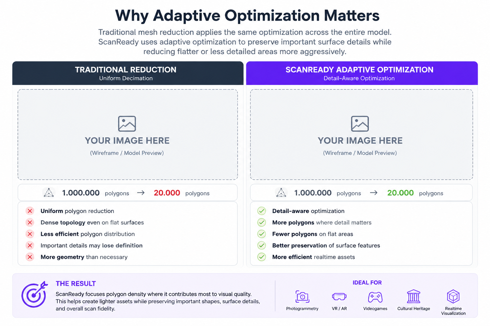

ScanReady 1.0
Adaptive Scan Optimization and Baking Workflow for Blender

ScanReady 1.0 is a Blender addon designed to turn heavy 3D scans into optimized, game-ready assets.
High-poly scans from photogrammetry or 3D capture can be too dense for realtime use. ScanReady 1.0 helps simplify those models, generate UVs, prepare baking, and create lighter assets that are easier to use in VR, AR, videogames, realtime visualization, and interactive environments.
High-Poly Scan -> Optimized Mesh -> UVs -> Bake -> Realtime Asset
Why ScanReady Is Different
Traditional mesh reduction often applies optimization too uniformly across the entire model.
That can waste polygons on flat or noisy areas while damaging the silhouette, edges, and details that make a scan recognizable.
ScanReady 1.0 uses Adaptive Reduce to analyze the surface before reduction.
It gives broader flat areas more reduction while protecting strong normal changes, feature edges, silhouettes, and visually important regions.
The result is a cleaner low-poly asset that keeps more geometry where it matters and spends fewer polygons where the scan can be simplified safely.

Blender Decimate vs ScanReady Adaptive Reduce
Same scan, similar target density. ScanReady is designed to reduce broad noisy surfaces while preserving stronger edges and silhouette detail.
Use this comparison image to show why ScanReady is more than a one-click Decimate preset: it is a scan-aware workflow for creating lighter realtime assets while keeping the visual identity of the original capture.
Why ScanReady 1.0?
3D scans are often beautiful but difficult to use in production.
They can contain:
- Millions of polygons
- Heavy geometry that slows Blender
- Dense meshes that are not suitable for VR
- No clean UV layout
- Materials or textures that need to be transferred to a lighter object
- Bake settings that are time-consuming to prepare manually
ScanReady 1.0 simplifies this process directly inside Blender.
It helps convert a heavy scan into a lighter, cleaner, baked asset that can be used more efficiently in realtime workflows.
Before / After
Optimized for realtime workflows without unnecessarily wasting polygons.

From heavy photogrammetry scans to optimized game-ready assets.

1M polygons -> 20K optimized game-ready mesh
One Click Bake
The fastest way to use ScanReady 1.0 is the ONE CLICK BAKE workflow.
ScanReady 1.0 can automatically perform:
- Mesh optimization
- Adaptive low-poly generation
- UV generation
- Automatic cage setup
- Texture baking
- Final asset and material setup
- Texture saving when output saving is enabled
Start with One Click Bake for most scans.
Use the manual workflow when you need more control.
Key Features
Adaptive Optimization
Preserves important surface details while simplifying flatter or less detailed areas more aggressively.
One Click Workflow
Runs the main scan-to-asset pipeline automatically.
Smart UV Workflow
Generates UVs optimized for baking and texture usage.
Automatic Cage Generation
Creates and previews baking cages directly inside Blender.
Texture Baking
Transfers visual detail from the original high-poly scan to the optimized mesh.
Multi-Material Support
Supports baking workflows that require multiple materials for higher texture quality.
Realtime Optimization
Designed for VR, AR, videogames, and realtime rendering workflows.
Memory-Safe Baking
Includes safer baking options for heavy scans and lower VRAM systems.
Reusable Presets
Allows repeated scan processing with faster setup.
Workflow Overview
ScanReady 1.0 follows a simple 3-step workflow.
1. Preview / Reduce
Create an optimized low-poly preview from your high-poly scan.
This step reduces the model while preserving important visual details for realtime applications.
2. UV / Cage
Generate UVs and prepare the baking cage.
This step prepares the optimized mesh to receive texture detail from the original scan.
3. Bake / Output
Bake texture information from the original high-poly object to the optimized mesh.
The result is a lighter asset that preserves much of the visual richness of the original scan while remaining easier to use in VR, games, and realtime scenes.
Designed for Realtime Workflows
ScanReady 1.0 is ideal for:
- Photogrammetry scans
- Cultural heritage assets
- Museum objects
- Game props
- Environment assets
- Real-world captured models
- VR experiences
- AR applications
- Realtime visualization
- Interactive installations
- Educational reconstructions
What ScanReady 1.0 Creates
After the workflow, ScanReady 1.0 can generate:
- Optimized low-poly mesh
- UV-ready object
- Baking cage
- Final baked mesh
- Final material setup
- Texture files saved to the selected output folder
- Bake Folder shortcut for opening the latest saved texture folder
The goal is to preserve the visual identity of the original scan while making it lighter and more practical for production.
Compatibility
ScanReady 1.0 is packaged as a Blender Extension for Blender 4.2 and newer.
Check the extension manifest and marketplace listing for the exact supported Blender version range.
Get Started
New users should begin here:
For the full automatic workflow, continue with:
Videos & Tutorials
Follow ScanReady development and workflow videos on YouTube:
ScanReady Tutorials on YouTube
Support
If you experience issues or need help with ScanReady 1.0: